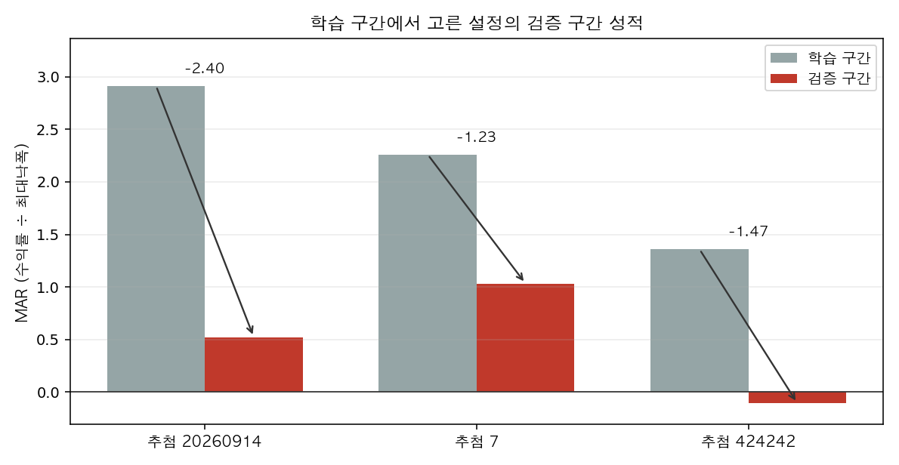
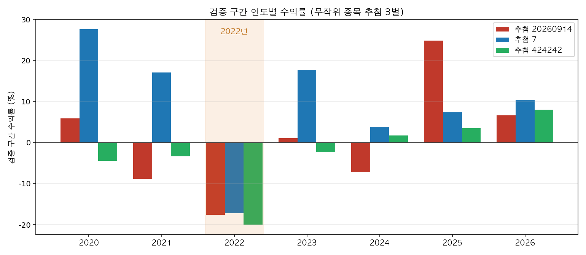
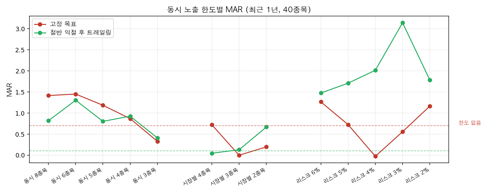

네 군데가 틀렸고, 넷 다 측정의 결함입니다. 전략의 문제가 아니라 제가 만든 백테스트의 문제입니다.
① 계좌가 없는 돈을 썼습니다. 포트폴리오 계산이 청산일 손익만 더하고 동시 보유 자본을 추적하지 않았습니다. 그 결과 364일 중 119~183일이 투입 자본 100%를 넘었고 최대 198%까지 갔습니다. 레버리지를 쓰지 않는다는 전제가 지켜지지 않은 숫자였습니다.
② 낙폭을 청산 시점에만 쟀습니다. 보유 중 겪는 낙폭이 잡히지 않아 실제보다 얕게 나왔습니다. 일별 시가평가로 바꾸니 현 정책(고정 목표 전량 청산)의 1년 낙폭이 15.4%에서 21.4%로 올라갑니다.
③ 무작위 유니버스에 거래 불가능한 종목이 섞였습니다. 스크리너가 내준 목록에 호가가 거의 움직이지 않는 해외 장외 종목이 들어 있었습니다. GMGSF는 봉의 70%, SURYY는 69%, MZHOF는 60%가 고가와 저가가 같은 무거래일이고 일평균 거래대금이 각각 $9,088 / $7,110 / $45,422입니다. EBBNF는 하루 변동폭이 주가의 0.21%라 구조적 손절이 진입가 바로 아래에 붙습니다. 이 때문에 매매 한 건이 7,247,888R을 기록했고, 그 한 건이 한 추첨의 결과 전체를 만들었습니다(총 7,247,935R 중). 나머지 1,586건의 중앙값은 -1.02R로 정상이었습니다.
④ 분할 청산 판본에 버그가 있었습니다. 엔진이 목표를 하나만 준 셋업에서 1차 목표 청산이 사라져 손절까지 끌고 갔습니다.
| 항목 | 조치 |
|---|---|
| 현금 제약 | 동시 보유 자본이 계좌를 넘으면 매매를 거절하거나 남은 현금만큼만 채웁니다. 거절 건수와 그 매매가 냈을 손익을 결과에 남깁니다 |
| 낙폭 | 보유 중 평가손익을 매일 반영해 잽니다. 20% 한도 판정은 이 곡선으로만 합니다 |
| 거래 가능성 | 미국 일평균 거래대금 $5M, 한국 ₩10억, 무거래 봉 5% 이하, 봉 500개 이상. 오늘 기준이 아니라 저장된 과거 시세로 판정합니다 |
| 손절 폭 하한 | 손절이 주가의 0.5%보다 좁으면 위험 단위가 성립하지 않는 것으로 보고 매매하지 않으며, 건수를 따로 셉니다 |
| 자리 배분 | 같은 날 신호가 자리보다 많을 때 무엇을 살지 다섯 규칙 중에서 고릅니다 |
| 동시 노출 한도 | 동시 보유 종목 수·시장별 상한·동시 리스크 합계. 각 포지션이 실제로 지는 리스크로 셉니다 |
거래 가능성 필터는 첫 추첨 30종목 중 11개를 걸러냅니다. 그래서 유니버스를 40종목씩 다시 뽑아 필터 통과 후 26~27종목이 남게 했습니다.
사용자 확정 사항입니다. 낙폭 대비 수익(MAR = 수익률 ÷ 최대낙폭)을 극대화하되, 1회 매매 리스크는 계좌의 1%, 계좌 최대 낙폭은 20% 이내, 레버리지는 쓰지 않습니다.
여기서 하나가 먼저 정해집니다. 사이징은 지렛대가 아닙니다. 수익률은 매매 건수 × 매매당 기대값(R) × 1R당 계좌 비중의 곱인데, 세 번째 항이 막혀 있습니다. 1회 1%에서 이미 계좌 낙폭이 21.4%로 한도에 닿아 있어 비중을 키우면 수익보다 낙폭이 먼저 한도를 넘습니다.
손절 폭 중앙값이 주가의 6.75%이므로 1%를 걸려면 비중이 13%(상한)입니다. 동시 보유가 평균 8~9종목이면 104~121%가 되어 현금 100%를 넘습니다. 세 제약을 동시에 지키면 자리가 모자라고, 그때 무엇을 살지 고르는 규칙이 새로 필요해집니다.
구간 2025-09-14 ~ 2026-09-14, 현금 제약과 일별 시가평가를 적용한 값입니다.
| 유니버스 | 청산 규칙 | 수익률 | 최대 낙폭 | MAR |
|---|---|---|---|---|
| 보유·관심 13종목 | 고정 목표 (현 정책) | +8.9% | 17.3% | 0.51 |
| 보유·관심 13종목 | 절반 익절 후 트레일링 | +15.5% | 20.8% | 0.75 |
| 무작위 27종목 | 고정 목표 (현 정책) | -7.8% | 18.1% | -0.43 |
| 무작위 27종목 | T1 절반 익절 | -9.3% | 23.1% | -0.40 |
| 무작위 27종목 | 트레일링 | -32.3% | 36.1% | -0.90 |
| 무작위 27종목 | 절반 익절 후 트레일링 | -21.5% | 29.4% | -0.73 |
| 참고 | 보유·관심 13종목 | 무작위 27종목 |
|---|---|---|
| 그냥 동일가중으로 보유했을 때 | +106.0% | +14.5% |
선택편향을 걷어낸 27종목에서는 네 청산 규칙이 전부 손실입니다. 직전 리포트가 무작위 9종목에서 트레일링 +11.1%를 냈던 것은 표본이 작았기 때문이며, 같은 방식으로 27종목을 돌리면 -32.3%입니다.
구간 2018-01 ~ 2026-09, 2년 학습 / 1년 검증으로 7개 창입니다. 각 창의 학습 구간에서 청산 규칙 3종과 노출 한도 4종을 조합한 12개 후보 중 MAR이 가장 높으면서 낙폭 20%를 지킨 것을 고르고, 그 다음 1년에만 성적을 매겼습니다. 무작위 종목 추첨을 시드 3벌로 나눠 같은 절차를 세 번 돌렸습니다.
| 추첨 | 6.7년 누적 수익률 | 검증 매매 | 매매당 기대값 | 학습 MAR | 검증 MAR | 격차 |
|---|---|---|---|---|---|---|
| 20260914 (27종목) | -0.6% | 1,596건 | -0.032R | 2.92 | 0.52 | 2.40 |
| 7 (26종목) | +79.7% | 1,562건 | +0.055R | 2.26 | 1.03 | 1.23 |
| 424242 (26종목) | -17.9% | 1,566건 | +0.037R | 1.36 | -0.11 | 1.47 |

같은 절차를 종목만 바꿔 세 번 돌렸는데 6.7년 누적이 -17.9%에서 +79.7%까지 벌어집니다. 매매 표본은 세 번 모두 1,500건이 넘으므로 표본 부족이 아니라 결과가 어느 종목을 뽑았느냐에 좌우된다는 뜻입니다.

| 검증 연도 | 추첨 20260914 | 추첨 7 | 추첨 424242 |
|---|---|---|---|
| 2020 | +6.0% | +27.6% | -4.5% |
| 2021 | -8.8% | +17.1% | -3.4% |
| 2022 | -17.6% | -17.2% | -20.0% |
| 2023 | +1.1% | +17.7% | -2.3% |
| 2024 | -7.3% | +3.9% | +1.8% |
| 2025 | +24.9% | +7.4% | +3.5% |
| 2026 | +6.7% | +10.4% | +8.0% |
2022년만 세 추첨이 모두 크게 잃고, 그 창의 낙폭은 21.5% / 22.4% / 20.1%로 셋 다 한도를 넘습니다. 다른 연도는 부호가 제각각인데 2022년만 일치합니다. 롱 온리 엔진이 하락 국면에서 겪는 일이며, 직전 리포트의 1년 표본에는 이 국면이 없었습니다.
| 추첨 | 기대값 | 상위 3건 제거 | 상위 5건 제거 | 승률 | 최대 연속 손실 |
|---|---|---|---|---|---|
| 20260914 | -0.032R | -0.061R | -0.074R | 37.2% | 15회 |
| 7 | +0.055R | +0.033R | +0.021R | 40.9% | 11회 |
| 424242 | +0.037R | +0.009R | -0.005R | 37.8% | 15회 |
상위 몇 건을 빼도 양수로 남는 것은 추첨 7 하나뿐입니다. 연속 11~15회 손실은 1회 1% 리스크로도 계좌의 11~15%가 연속으로 빠진다는 뜻이며, 그 구간을 버티는 것이 현실적으로 가장 어려운 부분입니다.
1년 표본에서 가장 크게 MAR을 움직인 항목입니다. 매매 자체는 바꾸지 않고 계좌 규칙만 바꿉니다.

| 청산 규칙 | 한도 없음 | 가장 좋았던 한도 |
|---|---|---|
| 고정 목표 | +15.1% / 낙폭 21.4% / MAR 0.70 | 동시 6종목 — +22.8% / 15.7% / 1.45 |
| 절반 익절 후 트레일링 | +2.9% / 낙폭 28.7% / MAR 0.10 | 동시 리스크 3% — +22.2% / 7.1% / 3.14 |
방향은 구조적입니다. 세 청산 규칙과 세 한도 종류 전부에서, 동시 노출을 줄이면 낙폭이 크게 떨어지고 수익은 대체로 유지되거나 올랐습니다. 자리가 다 찼을 때 들어가는 매매가 평균적으로 나쁘다는 뜻이며, 그 시점은 신호가 몰리는 때 — 시장이 한 방향으로 움직여 여러 종목이 동시에 조건을 채우는 때입니다.
값은 구조적이지 않습니다. 최적 한도가 데이터를 바꾸면 통째로 이동합니다. 필터 이전 데이터에서는 "시장별 2종목"이 고정 목표 기준 MAR 3.17로 최고였는데, 같은 항목이 정리된 데이터에서는 0.20입니다. 워크포워드에서도 7개 창 중 4~6종의 서로 다른 설정이 뽑혔습니다. 어느 값을 쓸지는 이 표본이 정하지 못하며, 여기서 하나를 고르면 그게 과최적화입니다.
실행 전에 정해 둔 기준입니다. 판정은 워크포워드 검증 구간으로만 합니다.
| 항목 | 기준 | 결과 |
|---|---|---|
| 검증 구간 매매 표본 | ≥ 200건 | 1,562~1,596건 — 통과 |
| 비용 후 기대값 | > 0 | 3벌 중 2벌, 그것도 +0.04~0.06R — 미달 |
| 상위 3건 제거 후 기대값 | > 0 | 3벌 중 1벌 — 미달 |
| 검증 구간 최대 낙폭 | ≤ 20% | 2022년 창에서 3벌 전부 초과 — 미달 |
| 추첨 3벌의 부호 일치 | 일치 | -0.6% / +79.7% / -17.9% — 미달 |
| 파라미터 안정성 | 채택값 ±1구간 순위 유지 | 7창 중 4~6종의 서로 다른 설정 — 미달 |
여섯 항목 중 다섯이 미달입니다. 계획에 걸어 둔 중단 조건에 해당하므로 지렛대 최적화 단계로 넘어가지 않고 여기서 멈춥니다.
수익률을 극대화하는 방법을 찾지 못했습니다. 찾지 못한 이유는 방법이 부족해서가 아니라 극대화할 대상이 확인되지 않기 때문입니다. 매매당 기대값이 세 추첨에서 -0.032R, +0.055R, +0.037R로 사실상 0이고, 여기에 무엇을 곱해도 0 근처입니다.
지금 데이터로 말할 수 있는 것은 셋입니다.
동시 노출을 줄이는 방향은 맞습니다. 다만 얼마로 줄일지를 이 표본이 정하지 못하므로, 지금 값을 정해 정책에 넣지 않습니다.
비중을 키우는 길은 막혀 있습니다. 1회 1%에서 이미 낙폭이 한도에 닿아 있습니다.
막히는 곳은 하락 국면입니다. 2022년 검증 구간에서만 세 추첨이 일치해 -17% ~ -20%를 잃고 낙폭 한도를 넘깁니다. 롱 온리 구조 엔진에는 하락장에서 할 일이 없고, 지금은 그 구간에 그대로 노출됩니다.
그래서 다음에 볼 것은 청산 규칙이나 한도 값이 아니라 하락 국면을 어떻게 다룰 것인가입니다. 선택지는 세 가지로 좁혀집니다 — ① 시장 국면 판정을 넣어 하락 국면에서 신규 진입을 멈춘다 ② 숏 또는 인버스를 허용한다 ③ 하락 국면에는 이 시스템을 쓰지 않고 현금으로 둔다. ①은 국면 판정 자체가 또 하나의 과최적화 대상이 되므로 워크포워드로 검증해야 하고, ②는 엔진이 롱 온리로 설계돼 있어 구조 변경이 필요하며, ③은 판정을 사람이 내린다는 뜻입니다. 어느 쪽을 볼지는 결정이 필요한 사안입니다.